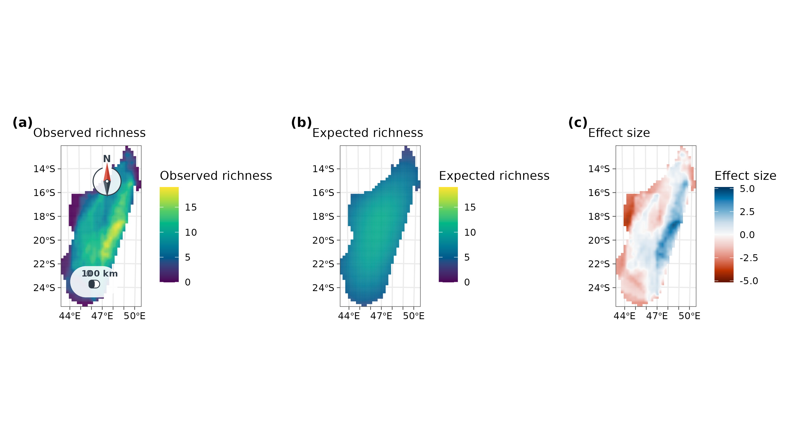
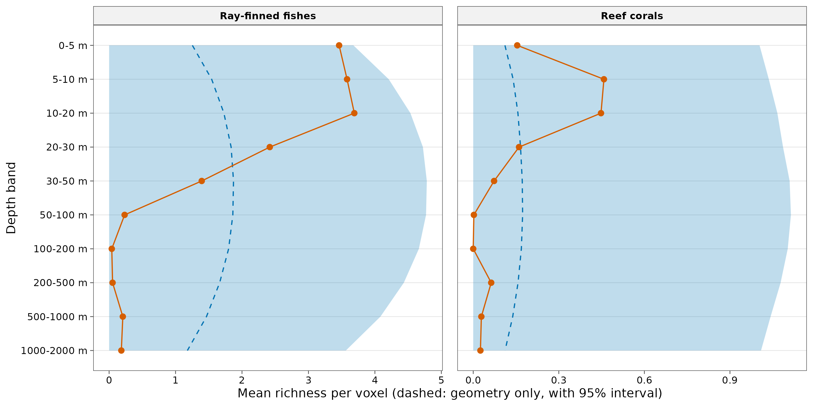
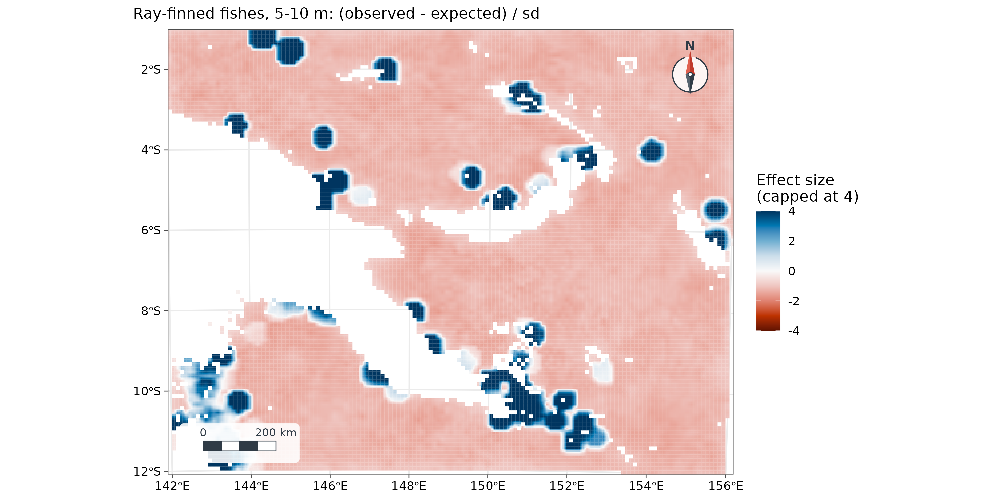

10. Mid-domain effect on maps and in the sea
guide-10-mid-domain.RmdThe concept
Species’ ranges must fit inside the region they live in: an island, a mountain, an ocean basin. If ranges were placed at random, they would overlap most in the middle of the region, simply because a large range can only fit there. Richness would peak in the interior with no environmental cause at all: the mid-domain effect (Colwell and Lees 2000). Before explaining a hotspot by climate, productivity or history, ask how much of it geometry alone would produce.
A mid-domain null model keeps each species’ observed range size and shuffles where the range lies. Compare observed richness with the model:
| Observed richness is… | Interpretation |
|---|---|
| Close to the null model | Geometry alone could produce the pattern |
| Above it | More species than geometry predicts: an environmental or historical cause |
| Below it | Fewer species than geometry predicts |
The tidydiversity article covers one-dimensional gradients (elevation, latitude). tidymapr adds two dimensions (maps) and three (the sea), with domains of any shape. Ranges are placed with the spreading-dye algorithm (Jetz and Rahbek 2001): a random seed cell, then growth into randomly chosen neighbouring cells, so every range stays in one piece and follows the coastline and the sea floor.
Two dimensions: lemurs of Madagascar
Madagascar is a closed domain, and lemurs occur nowhere else: the classic test case for the mid-domain effect (Lees, Kremen and Andriamampianina 1999). The records are GBIF observations and specimens (CC0 and CC BY only), from which points that a single dataset georeferenced to the centre of the country were removed.
lemurs <- read.csv(system.file("extdata/gbif_lemurs_madagascar.csv.gz", package = "tidymapr"))
world <- sf::st_read(system.file("shapes/world.gpkg", package = "spData"), quiet = TRUE)
madagascar <- world[world$name_long == "Madagascar", ]
c(records = nrow(lemurs), species = length(unique(lemurs$species)))
#> records species
#> 3512 73
mde <- geo_mde(lemurs, madagascar, res = 25000, nsim = 199)
attr(mde, "fit")
#> # A tibble: 1 × 4
#> n_species n_cells r2 truncated
#> <int> <int> <dbl> <int>
#> 1 67 934 0.413 0
v <- terra::values(mde)
top <- max(v[, c("observed", "expected")], na.rm = TRUE)
lim <- max(abs(v[, "ses"]), na.rm = TRUE)
panel <- function(layer, title, palette, limits, furniture = FALSE) {
geo_map(subtitle = title, scale_bar = furniture, north_arrow = furniture) |>
map_raster(mde[[layer]], name = title, palette = palette, limits = limits) |>
map_build()
}
geo_panels(list(
panel("observed", "Observed richness", "viridis", c(0, top), TRUE),
panel("expected", "Expected richness", "viridis", c(0, top)),
panel("ses", "Effect size", "RdBu", c(-lim, lim))
), ncol = 3, guides = "keep")
How to read it. Each cell is 25 x 25 km.
observed counts the species whose range (the convex hull of
its records) covers the cell; expected is the mean of 199
random placements of the same ranges; the effect size is (observed -
expected) / sd, so values beyond about +/-2 lie outside the null model’s
interval. In fit, r2 is the share of the
variation in observed richness that geometry explains, and
truncated counts ranges that started on a small offshore
island too small to hold them.
Interpretation. Geometry alone predicts a broad peak in the middle of the island and explains about 41% of the variation. Observed richness is instead concentrated in a belt along the eastern escarpment, well above the null model (blue), and the west and south-west hold fewer species than geometry predicts (red). The eastern belt is Madagascar’s humid rainforest; the west is dry deciduous forest and the south-west spiny thicket. So the shape of the island contributes, but the rainforest is where lemur richness is decided. Part of the eastern excess is also sampling effort: national parks such as Ranomafana and Andasibe are among the most surveyed sites.
Three dimensions: fishes and corals in the sea
At sea, a species occupies a range in depth as well as on the map,
and the domain is bounded by the coast, the sea floor and the surface.
geo_mde_3d() divides the water column into depth bands and
grows ranges in three dimensions: north, south, east, west, up and down.
A depth band exists in a cell only if the sea floor there is deeper than
the top of the band, so ranges follow the real bathymetry.
The domain is the seas of Papua New Guinea and the northern Coral Sea (142-156°E, 1-12°S) on a 0.1° grid, with GEBCO bathymetry. The records are reef-building corals (Scleractinia) and ray-finned fishes (Actinopterygii) from OBIS that report a depth, CC0 and CC BY only.
bathy <- read.csv(system.file("extdata/png_bathymetry.csv.gz", package = "tidymapr"))
bathy <- terra::rast(bathy, type = "xyz", crs = "EPSG:4326")
bathy[bathy <= 0] <- NA # land
marine <- read.csv(system.file("extdata/obis_png_marine.csv.gz", package = "tidymapr"))
table(marine$group)
#>
#> coral fish
#> 529 6931
breaks <- c(0, 5, 10, 20, 30, 50, 100, 200, 500, 1000, 2000)Reef species are tied to patchy habitat, so a convex hull would join
distant reefs across open ocean. Here each species’ range is the area
within 25 km of its records (range = "buffer"), in every
depth band between its shallowest and deepest record:
fit3d <- lapply(split(marine, marine$group), function(d) {
geo_mde_3d(d, bathy, breaks = breaks, range = "buffer", buffer = 25000, nsim = 99)
})
fit3d$fish$fit
#> # A tibble: 1 × 4
#> n_species n_voxels r2 truncated
#> <int> <int> <dbl> <int>
#> 1 1414 110191 -0.00365 17
prof <- do.call(rbind, lapply(names(fit3d), function(g) {
cbind(fit3d[[g]]$profile, group = c(coral = "Reef corals", fish = "Ray-finned fishes")[g])
}))
#> Warning in data.frame(..., check.names = FALSE): row names were found from a
#> short variable and have been discarded
#> Warning in data.frame(..., check.names = FALSE): row names were found from a
#> short variable and have been discarded
ggplot(prof, aes(y = band)) +
geom_ribbon(aes(xmin = lower, xmax = upper, group = 1), fill = "#0072B2", alpha = 0.25) +
geom_path(aes(x = expected, group = 1), colour = "#0072B2", linetype = "dashed") +
geom_path(aes(x = observed, group = 1), colour = "#D55E00") +
geom_point(aes(x = observed), colour = "#D55E00", size = 2) +
scale_y_discrete(limits = rev) +
facet_wrap(~group, scales = "free_x") +
labs(x = "Mean richness per voxel (dashed: geometry only, with 95% interval)", y = "Depth band") +
theme_tidymapr()
How to read it. A voxel is one 0.1° cell in one depth band. The profile gives, for each depth band, the mean observed richness per voxel (orange) and the mean of the null model (blue, with its interval).
Interpretation. In three dimensions, geometry predicts a peak at intermediate depths (30-100 m), where ranges spreading from the surface and from the deep overlap most. Observed richness does the opposite: for both fishes and corals it is highest at 0-20 m and falls far below the null model from 50 m down. The shallow peak is not a mid-domain effect. For corals the explanation is light: their photosynthetic symbionts need it. For fishes it is the reef itself, which is built in the sunlit zone. Two cautions: most OBIS depth records come from diver surveys, which rarely go below 30 m, so sampling effort exaggerates the shallow peak; and the depth bands are not equally thick, so the null model treats one step down as the same whether it is 5 m or 1000 m.
ses <- terra::clamp(fit3d$fish$ses[["5-10 m"]], -4, 4)
geo_map(subtitle = "Ray-finned fishes, 5-10 m: (observed - expected) / sd") |>
map_raster(ses, name = "Effect size\n(capped at 4)", palette = "RdBu", limits = c(-4, 4))
At 5-10 m, fish richness exceeds the null model (blue) around the surveyed reefs (Milne Bay, Kimbe Bay, Madang, the Torres Strait) and is below it (red) over open water, where few reef fishes live.
How to report it
To test whether geometric constraints could explain the distribution of lemur richness, species’ ranges (convex hulls of GBIF records) were randomised 199 times within Madagascar on a 25 km equal-area grid with a spreading-dye mid-domain null model (Jetz and Rahbek 2001) in tidymapr. Geometry explained 41% of the variation in richness; richness exceeded the null model along the eastern rainforest belt and fell below it in the west and south-west.
For the sea, add the depth bands, the bathymetry, how ranges were built (buffer distance and depth interpolation), and the caveats on depth sampling.
Caveats
- Range construction shapes the result. Hulls suit continuous ranges on land; buffers suit patchy habitat. Report which you used.
- Sampling effort is not uniform: well-surveyed parks and diving depths look richer. Interpret effect sizes with a map of effort.
-
Grid: use an equal-area projection on land
(
geo_mde()does this automatically). The marine example uses a 0.1° grid, whose cells differ in area by under 2% between 1° and 12°S. - Effect sizes are unstable where the null model expects almost no species (very small sd); cap the colour scale, as above.
References
Colwell, R. K. and Lees, D. C. (2000). The mid-domain effect: geometric constraints on the geography of species richness. Trends in Ecology & Evolution, 15, 70-76.
Jetz, W. and Rahbek, C. (2001). Geometric constraints explain much of the species richness pattern in African birds. Proceedings of the National Academy of Sciences, 98, 5661-5666.
Lees, D. C., Kremen, C. and Andriamampianina, L. (1999). A null model for species richness gradients: bounded range overlap of butterflies and other rainforest endemics in Madagascar. Biological Journal of the Linnean Society, 67, 529-584.
GBIF.org and OBIS: occurrence records retrieved through their APIs; each record keeps its dataset identifier and licence (CC0 or CC BY 4.0). GEBCO Compilation Group: GEBCO gridded bathymetry, via the OBIS xylookup service.